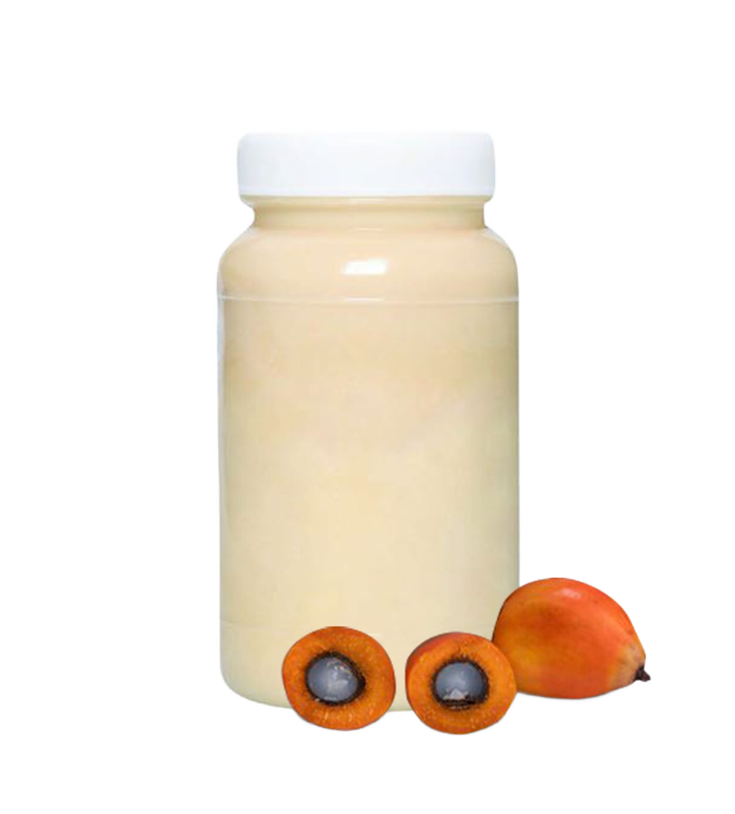

Palm Fatty Acid Distillate for Sale: Indonesia Wholesale Trade
HS Code: 382319 Fatty acids, industrial, monocarboxylic; acid oils from refining
Palm Fatty Acid Distillate (PFAD) is a valuable by-product obtained during the physical refining of crude palm oil.

In the oleochemical sector, it serves as a raw material for the production of soap, candles, and biodiesel, etc. Its natural fatty acid composition makes it an important ingredient in detergents and surfactants.
PFAD’s natural fatty acid composition makes it a key ingredient in detergents and surfactants.
Beyond industrial applications, it can also be processed into animal feed additives and used as a renewable energy source, particularly in biofuel production.
Get Premium PFAD Palm Fatty Acid Distillate for Sale
Are you looking for a reliable Indonesia bulk wholesale manufacturer and supplier of Palm Fatty Acid Distillate PFAD for your needs?You’ve come to the right place! Contact us at OneWholesaleIndo.com, and we will be happy to provide the right solution tailored to your needs.
PFAD Palm Fatty Acid Distillate Uses
Soap & Detergent Industry
- Function: Rich in free fatty acids, PFAD palm fatty acid distillate is an economical raw material for producing soap, detergents, and surfactants.
- How to Use: PFAD Processed as a base ingredient in soap noodles or blended with other fatty acids to achieve desired cleaning and foaming properties.
Oleochemical Industry
- Function: PFAD palm fatty acid distilate used in the manufacture of fatty alcohols, esters, and other derivatives applied in cosmetics, pharmaceuticals, and industrial chemicals.
- How to Use: PFAD palm fatty acid distillate processed as a primary raw material in oleochemical plants to create value-added specialty products.
Biodiesel Production
- Function: PFAD palm fatty acid distilate serves as a renewable feedstock for biodiesel, offering a cost-effective alternative to refined vegetable oils.
- How to Use: PFAD palm fatty acid distillate converted through transesterification into fatty acid methyl esters (FAME) for blending with conventional diesel fuels.
Animal Feed Additive
- Function: PFAD palm fatty acid distilate provides supplemental energy for livestock, especially in ruminant feed formulations.
- How to Use: PFAD palm fatty acid distilate added in small, controlled amounts (typically below 5%) to improve energy density without compromising feed quality.
Palm Fatty Acid Distillate (PFAD) composition & Density
Palm Fatty Acid Distillate (PFAD) generally consists of:- Free Fatty Acids (FFA): 80–90%
- Glycerides: 10–15%
- Squalene ~0.5–1%
- Vitamin E ~0.3–0.6%
- Sterols ~0.3–0.5%
*) PFAD typically has a density of around 0.89 – 0.92 g/cm³ at 50 °C, depending on its exact composition and refining process.
Indonesia Palm Fatty Acid Distillate (PFAD) for Sale
Indonesia is one of the world’s leading palm oil producers, supported by its extensive plantations and favorable tropical climate that ensure a stable and sustainable palm oil industry.This strong production base enables Indonesia to be a reliable exporter of Palm Fatty Acid Distillate (PFAD) for various global industries.
Indonesian PFAD is valued for its high content of free fatty acids along with glycerides, squalene, vitamin E, and sterols, making it a versatile raw material.
With consistent supply capacity and competitive quality, Indonesia delivers high-grade Palm Fatty Acid Distillate to meet the diverse requirements of international markets.